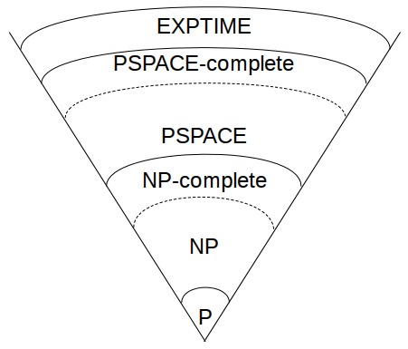

Modern information theory was first published in 1948 by Claude Elmwood Shannon [1431,1432]. (His papers have been reprinted by the IEEE Press [1433].) For a good mathematical treatment of the topic, consult [593]. In this section, I will just sketch some important ideas.
Information theory defines the amount of information in a message as the minimum number of bits needed to encode all possible meanings of that message, assuming all messages are equally likely. For example, the day-of-the-week field in a database contains no more than 3 bits of information, because the information can be encoded with 3 bits:
000 = Sunday 001 = Monday 010 = Tuesday 011 = Wednesday 100 = Thursday 101 = Friday 110 = Saturday 111 is unused
If this information were represented by corresponding ASCII character strings, it would take up more memory space but would not contain any more information. Similarly, the “sex” field of a database contains only 1 bit of information, even though it might be stored as one of two 6-byte ASCII strings: “MALE” or “FEMALE.”
Formally, the amount of information in a message M is measured by the entropy of a message, denoted by H(M). The entropy of a message indicating sex is 1 bit; the entropy of a message indicating the day of the week is slightly less than 3 bits. In general, the entropy of a message measured in bits is log2n, in which n is the number of possible meanings. This assumes that each meaning is equally likely.
The entropy of a message also measures its uncertainty. This is the number of
plaintext bits needed to be recovered when the message is scrambled in
ciphertext in order to learn the plaintext. For example, if the ciphertext block
“QHP*5M” is either “MALE” or “FEMALE, ” then the uncertainty of the
message is 1. A cryptanalyst has to learn only one well-chosen bit to recover
the message.
For a given language, the rate of the language is
r = H(M)/N
in which N is the length of the message. The rate of normal English takes various values between 1.0 bits/letter and 1.5 bits/letter, for large values of N. Shannon, in [1434], said that the entropy depends on the length of the text. Specifically he indicated a rate of 2.3 bits/letter for 8-letter chunks, but the rate drops to between 1.3 and 1.5 for 16-letter chunks. Thomas Cover used a gambling estimating technique and found an entropy of 1.3 bits/character [386]. (I’ll use 1.3 in this book.) The absolute rate of a language is the maximum number of bits that can be coded in each character, assuming each character sequence is equally likely. If there are L characters in a language, the absolute rate is:
R = log2L
This is the maximum entropy of the individual characters.
For English, with 26 letters, the absolute rate is log226, or about 4.7 bits/letter. It should come as no surprise to anyone that the actual rate of English is much less than the absolute rate; natural language is highly redundant.
The redundancy of a language, denoted D, is defined by:
D = R - r
Given that the rate of English is 1.3, the redundancy is 3.4 bits/letter. This means that each English character carries 3.4 bits of redundant information.
An ASCII message that is nothing more than printed English has 1.3 bits of information per byte of message. This means it has 6.7 bits of redundant information, giving it an overall redundancy of 0.84 bits of information per bit of ASCII text, and an entropy of 0.16 bits of information per bit of ASCII text. The same message in BAUDOT, at 5 bits per character, has a redundancy of 0.74 bits per bit and an entropy of 0.26 bits per bit. Spacing, punctuation, numbers, and formatting modify these results.
Shannon defined a precise mathematical model of what it means for a cryptosystem to be secure. The goal of a cryptanalyst is to determine the key K, the plaintext P, or both. However, he may be satisfied with some probabilistic information about P: whether it is digitized audio, German text, spreadsheet data, or something else.
In most real-world cryptanalysis, the cryptanalyst has some probabilistic information about P before he even starts. He probably knows the language of the plaintext. This language has a certain redundancy associated with it. If it is a message to Bob, it probably begins with “Dear Bob.” Certainly “Dear Bob” is more probable than “e8T&g [, m.” The purpose of cryptanalysis is to modify the probabilities associated with each possible plaintext. Eventually one plaintext will emerge from the pile of possible plaintexts as certain (or at least, very probable).
There is such a thing as a cryptosystem that achieves perfect secrecy: a cryptosystem in which the ciphertext yields no possible information about the plaintext (except possibly its length). Shannon theorized that it is only possible if the number of possible keys is at least as large as the number of possible messages. In other words, the key must be at least as long as the message itself, and no key can be reused. In still other words, the one-time pad (see Section 1.5) is the only cryptosystem that achieves perfect secrecy.
Perfect secrecy aside, the ciphertext unavoidably yields some information about the corresponding plaintext. A good cryptographic algorithm keeps this information to a minimum; a good cryptanalyst exploits this information to determine the plaintext.
Cryptanalysts use the natural redundancy of language to reduce the number of possible plaintexts. The more redundant the language, the easier it is to cryptanalyze. This is the reason that many real-world cryptographic implementations use a compression program to reduce the size of the text before encrypting it. Compression reduces the redundancy of a message as well as the work required to encrypt and decrypt.
The entropy of a cryptosystem is a measure of the size of the keyspace, K. It is approximated by the base two logarithm of the number of keys:
H(K) = log2K
A cryptosystem with a 64-bit key has an entropy of 64 bits; a cryptosystem with a 56-bit key has an entropy of 56 bits. In general, the greater the entropy, the harder it is to break a cryptosystem.
For a message of length n, the number of different keys that will decipher a ciphertext message to some intelligible plaintext in the same language as the original plaintext (such as an English text string) is given by the following formula [712,95]:
2H(K)-nD - 1
Shannon [1432] defined the unicity distance, U, also called the unicity point, as an approximation of the amount of ciphertext such that the sum of the real information (entropy) in the corresponding plaintext plus the entropy of the encryption key equals the number of ciphertext bits used. He then went on to show that ciphertexts longer than this distance are reasonably certain to have only one meaningful decryption. Ciphertexts significantly shorter than this are likely to have multiple, equally valid decryptions and therefore gain security from the opponent’s difficulty in choosing the correct one.
For most symmetric cryptosystems, the unicity distance is defined as the entropy of the cryptosystem divided by the redundancy of the language.
U = H(K)/D
Unicity distance does not make deterministic predictions, but gives probabilistic results. Unicity distance estimates the minimum amount of ciphertext for which it is likely that there is only a single intelligible plaintext decryption when a brute-force attack is attempted. Generally, the longer the unicity distance, the better the cryptosystem. For DES, with a 56-bit key, and an ASCII English message, the unicity distance is about 8.2 ASCII characters or 66 bits. Table 11.1 gives the unicity distances for varying key lengths. The unicity distances for some classical cryptosystems are found in [445].
| Key Length (in bits) | Unicity Distance (in characters) |
|---|---|
| 40 | 5.9 |
| 56 | 8.2 |
| 64 | 9.4 |
| 80 | 11.8 |
| 128 | 18.8 |
| 256 | 37.6 |
Unicity distance is not a measure of how much ciphertext is required for cryptanalysis, but how much ciphertext is required for there to be only one reasonable solution for cryptanalysis. A cryptosystem may be computationally infeasible to break even if it is theoretically possible to break it with a small amount of ciphertext. (The largely esoteric theory of relativized cryptography is relevant here [230,231,232,233,234,235].) The unicity distance is inversely proportional to the redundancy. As redundancy approaches zero, even a trivial cipher can be unbreakable with a ciphertext-only attack.
Shannon defined a cryptosystem whose unicity distance is infinite as one that has ideal secrecy. Note that an ideal cryptosystem is not necessarily a perfect cryptosystem, although a perfect cryptosystem would necessarily be an ideal cryptosystem. If a cryptosystem has ideal secrecy, even successful cryptanalysis will leave some uncertainty about whether the recovered plaintext is the real plaintext.
While these concepts have great theoretical value, actual cryptanalysis seldom proceeds along these lines. Unicity distance guarantees insecurity if it’s too small but does not guarantee security if it’s high. Few practical algorithms are absolutely impervious to analysis; all manner of characteristics might serve as entering wedges to crack some encrypted messages. However, similar information theory considerations are occasionally useful, for example, to determine a recommended key change interval for a particular algorithm. Cryptanalysts also employ a variety of statistical and information theory tests to help guide the analysis in the most promising directions. Unfortunately, most literature on applying information theory to cryptanalysis remains classified, including the seminal 1940 work of Alan Turing.
The two basic techniques for obscuring the redundancies in a plaintext message are, according to Shannon, confusion and diffusion [1432].
Confusion obscures the relationship between the plaintext and the ciphertext. This frustrates attempts to study the ciphertext looking for redundancies and statistical patterns. The easiest way to do this is through substitution. A simple substitution cipher, like the Caesar Cipher, is one in which every identical letter of plaintext is substituted for a single letter of ciphertext. Modern substitution ciphers are more complex: A long block of plaintext is substituted for a different block of ciphertext, and the mechanics of the substitution change with each bit in the plaintext or key. This type of substitution is not necessarily enough; the German Enigma is a complex substitution algorithm that was broken during World War II.
Diffusion dissipates the redundancy of the plaintext by spreading it out over the ciphertext. A cryptanalyst looking for those redundancies will have a harder time finding them. The simplest way to cause diffusion is through transposition (also called permutation). A simple transposition cipher, like columnar transposition, simply rearranges the letters of the plaintext. Modern ciphers do this type of permutation, but they also employ other forms of diffusion that can diffuse parts of the message throughout the entire message.
Stream ciphers rely on confusion alone, although some feedback schemes add diffusion. Block algorithms use both confusion and diffusion. As a general rule, diffusion alone is easily cracked (although double transposition ciphers hold up better than many other pencil-and-paper systems).
Complexity theory provides a methodology for analyzing the computational complexity of different cryptographic techniques and algorithms. It compares cryptographic algorithms and techniques and determines their security. Information theory tells us that all cryptographic algorithms (except one-time pads) can be broken. Complexity theory tells us whether they can be broken before the heat death of the universe.
An algorithm’s complexity is determined by the computational power needed to execute it. The computational complexity of an algorithm is often measured by two variables: T (for time complexity) and S (for space complexity, or memory requirement). Both T and S are commonly expressed as functions of n, where n is the size of the input. (There are other measures of complexity: the number of random bits, the communications bandwidth, the amount of data, and so on.)
Generally, the computational complexity of an algorithm is expressed in what is called “big O” notation: the order of magnitude of the computational complexity. It’s just the term of the complexity function which grows the fastest as n gets larger; all lower-order terms are ignored. For example, if the time complexity of a given algorithm is 4n2 + 7n + 12, then the computational complexity is on the order of n2, expressed O(n2).
Measuring time complexity this way is system-independent. You don’t have to know the exact timings of various instructions or the number of bits used to represent different variables or even the speed of the processor. One computer might be 50 percent faster than another and a third might have a data path twice as wide, but the order-of-magnitude complexity of an algorithm remains the same. This isn’t cheating; when you’re dealing with algorithms as complex as the ones presented here, the other stuff is negligible (is a constant factor) compared to the order-of-magnitude complexity.
This notation allows you to see how the input size affects the time and space requirements. For example, if T = O(n), then doubling the input size doubles the running time of the algorithm. If T = O(2n), then adding one bit to the input size doubles the running time of the algorithm (within a constant factor).
Generally, algorithms are classified according to their time or space complexities. An algorithm is constant if its complexity is independent of n: O(1). An algorithm is linear, if its time complexity is O(n). Algorithms can also be quadratic, cubic, and so on. All these algorithms are polynomial; their complexity is O(nm), when m is a constant. The class of algorithms that have a polynomial time complexity are called polynomial-time algorithms.
Algorithms whose complexities are O(tf(n)), where t is a constant greater than 1 and f(n) is some polynomial function of n, are called exponential. The subset of exponential algorithms whose complexities are O(cf(n)), where c is a constant and f(n) is more than constant but less than linear, is called superpolynomial.
Ideally, a cryptographer would like to be able to say that the best algorithm to break this encryption algorithm is of exponential-time complexity. In practice, the strongest statements that can be made, given the current state of the art of computational complexity theory, are of the form “all known cracking algorithms for this cryptosystem are of superpolynomial-time complexity.” That is, the cracking algorithms that we know are of superpolynomial-time complexity, but it is not yet possible to prove that no polynomial-time cracking algorithm could ever be discovered. Advances in computational complexity may some day make it possible to design algorithms for which the existence of polynomial-time cracking algorithms can be ruled out with mathematical certainty.
As n grows, the time complexity of an algorithm can make an enormous difference in whether the algorithm is practical. Table 11.2 shows the running times for different algorithm classes in which n equals one million. The table ignores constants, but also shows why ignoring constants is reasonable.
| Class | Complexity | # of Operations for n = 106 | Time at 106 O/S |
|---|---|---|---|
| Constant | O(1) | 1 | 1 µsec. |
| Linear | O(n) | 106 | 1 sec. |
| Quadratic | O(n2) | 1012 | 11.6 days |
| Cubic | O(n3) | 1018 | 32,000 yrs. |
| Exponential | O(2n) | 10301,030 | 10301,006 times the age of the universe |
Assuming that the unit of “time” for our computer is a microsecond, the computer can complete a constant algorithm in a microsecond, a linear algorithm in a second, and a quadratic algorithm in 11.6 days. It would take 32,000 years to complete a cubic algorithm; not terribly practical, but a computer built to withstand the next ice age would deliver a solution eventually. Performing the exponential algorithm is futile, no matter how well you extrapolate computing power, parallel processing, or contact with superintelligent aliens.
Look at the problem of a brute-force attack against an encryption algorithm. The time complexity of this attack is proportional to the number of possible keys, which is an exponential function of the key length. If n is the length of the key, then the complexity of a brute-force attack is O(2n). Section 12.3 discusses the controversy surrounding a 56-bit key for DES instead of a 112-bit key. The complexity of a brute-force attack against a 56-bit key is 256; against a 112-bit key the complexity is 2112. The former is possible; the latter isn’t.
Complexity theory also classifies the inherent complexity of problems, not just the complexity of particular algorithms used to solve problems. (Excellent introductions to this topic are [600,211,1226]; see also [1096,27,739].) The theory looks at the minimum time and space required to solve the hardest instance of a problem on a theoretical computer known as a Turing machine . A Turing machine is a finite-state machine with an infinite read-write memory tape. It turns out that a Turing machine is a realistic model of computation.
Problems that can be solved with polynomial-time algorithms are called tractable, because they can usually be solved in a reasonable amount of time for reasonable-sized inputs. (The exact definition of “reasonable” depends on the circumstance.) Problems that cannot be solved in polynomial time are called intractable, because calculating their solution quickly becomes infeasible. Intractable problems are sometimes just called hard. Problems that can only be solved with algorithms that are superpolynomial are computationally intractable, even for relatively small values of n.
It gets worse. Alan Turing proved that some problems are undecidable. It is impossible to devise any algorithm to solve them, regardless of the algorithm’s time complexity.
Problems can be divided into complexity classes, which depend on the complexity of their solutions. Figure 11.1 shows the more important complexity classes and their presumed relationships. (Unfortunately, not much about this material has been proved mathematically.)

Figure 11.1 Complexity classes.
On the bottom, the class P consists of all problems that can be solved in polynomial time. The class NP consists of all problems that can be solved in polynomial time only on a nondeterministic Turing machine: a variant of a normal Turing machine that can make guesses. The machine guesses the solution to the problem — either by making “lucky guesses” or by trying all guesses in parallel — and checks its guess in polynomial time.
NP ’s relevance to cryptography is this: Many symmetric algorithms and all public-key algorithms can be cracked in nondeterministic polynomial time. Given a ciphertext C, the cryptanalyst simply guesses a plaintext, X, and a key, k, and in polynomial time runs the encryption algorithm on inputs X and k and checks whether the result is equal to C. This is important theoretically, because it puts an upper bound on the complexity of cryptanalysis for these algorithms. In practice, of course, it is a deterministic polynomial-time algorithm that the cryptanalyst seeks. Furthermore, this argument is not applicable to all classes of ciphers; in particular, it is not applicable to one-time pads — for any C, there are many X, k pairs that yield C when run through the encryption algorithm, but most of these X s are nonsense, not legitimate plaintexts.
The class NP includes the class P, because any problem solvable in polynomial time on a deterministic Turing machine is also solvable in polynomial time on a nondeterministic Turing machine; the guessing stage can simply be omitted.
If all NP problems are solvable in polynomial time on a deterministic machine, then P = NP. Although it seems obvious that some NP problems are much harder than others (a brute-force attack against an encryption algorithm versus encrypting a random block of plaintext), it has never been proven that P ≠ NP (or that P = NP). However, most people working in complexity theory believe that they are unequal.
Stranger still, specific problems in NP can be proven to be as difficult as any problem in the class. Steven Cook [365] proved that the Satisfiability problem (given a propositional Boolean formula, is there a way to assign truth values to the variables that makes the formula true?) is NP-complete . This means that, if Satisfiability is solvable in polynomial time, then P = NP. Conversely, if any problem in NP can be proven not to have a deterministic polynomial-time algorithm, the proof will show that Satisfiability does not have a deterministic polynomial-time algorithm either. No problem is harder than Satisfiability in NP.
Since Cook’s seminal paper was published, a huge number of problems have been shown to be equivalent to Satisfiability; hundreds are listed in [600], and some examples follow. By equivalent, I mean that these problems are also NP-complete; they are in NP and also as hard as any problem in NP . If their solvability in deterministic polynomial time were resolved, the P versus NP question would be solved. The question of whether P = NP is the central unsolved question of computational complexity theory, and no one expects it to be solved anytime soon. If someone showed that P = NP, then most of this book would be irrelevant: As previously explained, many classes of ciphers are trivially breakable in nondeterministic polynomial time. If P = NP, they are breakable by feasible, deterministic algorithms.
Further out in the complexity hierarchy is PSPACE . Problems in PSPACE can be solved in polynomial space, but not necessarily polynomial time. PSPACE includes NP, but some problems in PSPACE are thought to be harder than NP. Of course, this isn’t proven either. There is a class of problems, the so-called PSPACE-complete problems, with the property that, if any one of them is in NP then PSPACE = NP and if any one of them is in P then PSPACE = P .
And finally, there is the class of problems called EXPTIME . These problems are solvable in exponential time. The EXPTIME-complete problems can actually be proven not to be solvable in deterministic polynomial time. It has been shown that P does not equal EXPTIME .
Michael Garey and David Johnson compiled a list of over 300 NP-complete problems [600]. Here are just a few of them:
This isn’t a book on number theory, so I’m just going to sketch a few ideas that apply to cryptography. If you want a detailed mathematical text on number theory, consult one of these books: [1430,72,1171,12,959,681,742,420]. My two favorite books on the mathematics of finite fields are [971,1042]. See also [88,1157,1158,1060].
You all learned modular arithmetic in school; it was called “clock arithmetic.” Remember these word problems? If Mildred says she’ll be home by 10:00, and she’s 13 hours late, what time does she get home and for how many years does her father ground her? That’s arithmetic modulo 12. Twenty-three modulo 12 equals 11.
(10 + 13) mod 12 = 23 mod 12 = 11 mod 12
Another way of writing this is to say that 23 and 11 are equivalent, modulo 12:
23 ≡ 11 (mod 12)
Basically, a ≡ b (mod n) if a = b + kn for some integer k. If a is non-negative and b is between 0 and n, you can think of b as the remainder of a when divided by n. Sometimes, b is called the residue of a, modulo n. Sometimes a is called congruent to b, modulo n (the triple equals sign, ≡, denotes congruence). These are just different ways of saying the same thing.
The set of integers from 0 to n - 1 form what is called a complete set of residues modulo n. This means that, for every integer a, its residue modulo n is some number from 0 to n - 1.
The operation a mod n denotes the residue of a, such that the residue is some integer from 0 to n - 1. This operation is modular reduction. For example, 5 mod 3 = 2.
This definition of mod may be different from the definition used in some programming languages. For example, PASCAL’s modulo operator sometimes returns a negative number. It returns a number between -(n - 1) and n - 1. In C, the % operator returns the remainder from the division of the first expression by the second; this can be a negative number if either operand is negative. For all the algorithms in this book, make sure you add n to the result of the modulo operator if it returns a negative number.
Modular arithmetic is just like normal arithmetic: It’s commutative, associative, and distributive. Also, reducing each intermediate result modulo n yields the same result as doing the whole calculation and then reducing the end result modulo n.
(a + b) mod n = ((a mod n) + (b mod n)) mod n (a - b) mod n = ((a mod n) - (b mod n)) mod n (a*b) mod n = ((a mod n)*(b mod n)) mod n (a*(b + c)) mod n = (((a*b) mod n) + ((a*c) mod n)) mod n
Cryptography uses computation mod n a lot, because calculating discrete logarithms and square roots mod n can be hard problems. Modular arithmetic is also easier to work with on computers, because it restricts the range of all intermediate values and the result. For a k-bit modulus, n, the intermediate results of any addition, subtraction, or multiplication will not be more than 2k-bits long. So we can perform exponentiation in modular arithmetic without generating huge intermediate results. Calculating the power of some number modulo some number,
ax mod n,
is just a series of multiplications and divisions, but there are speedups. One kind of speedup aims to minimize the number of modular multiplications; another kind aims to optimize the individual modular multiplications. Because the operations are distributive, it is faster to do the exponentiation as a stream of successive multiplications, taking the modulus every time. It doesn’t make much difference now, but it will when you’re working with 200-bit numbers.
For example, if you want to calculate a8 mod n, don’t use the naïve approach and perform seven multiplications and one huge modular reduction:
(a*a*a*a*a*a*a*a) mod n
Instead, perform three smaller multiplications and three smaller modular reductions:
((a2 mod n)2 mod n)2 mod n
By the same token,
a16 mod n = (((a2 mod n)2 mod n)2 mod n)2 mod n
Computing ax mod n, where x is not a power of 2, is only slightly harder. Binary notation expresses x as a sum of powers of 2: 25 is 11001 in binary, so 25 = 24 + 23 + 20. So
a25 mod n = (a*a24) mod n = (a*a8*a16) mod n = (a*((a2)2)2*(((a2)2)2)2) mod n = ((((a2*a)2)2)2*a) mod n
With judicious storing of intermediate results, you only need six multiplications:
(((((((a2 mod n)*a) mod n)2 mod n)2 mod n)2 mod n)*a) mod n
This is called addition chaining [863], or the binary square and multiply method. It uses a simple and obvious addition chain based on the binary representation. In C, it looks like:
unsigned long qe2(unsigned long x, unsigned long y, unsigned long n) {
unsigned long s,t,u;
int i;
s = 1; t = x; u = y;
while(u) {
if(u&1) s = (s*t)%n;
u>>=1;
t = (t*t)%n;
}
return(s);
}
Another, recursive, algorithm is:
unsigned long fast_exp(unsigned long x, unsigned long y, unsigned long N) {
unsigned long tmp;
if(y==1) return(x % N);
if ((y&1)==0) {
tmp = fast_exp(x,y/2,N);
return ((tmp*tmp)%N);
}
else {
tmp = fast_exp(x,(y-1)/2,N);
tmp = (tmp*tmp)%N;
tmp = (tmp*x)%N;
return (tmp);
}
}
This technique reduces the operation to, on the average, 1.5*k operations, if kis the length of the number x in bits. Finding the calculation with the fewest operations is a hard problem (it has been proven that the sequence must contain at least k-1 operations), but it is not too hard to get the number of operations down to 1.1*k or better, as k grows.
An efficient way to do modular reductions many times using the same n is Montgomery’s method [1111]. Another method is called Barrett’s algorithm [87]. The software performance of these two algorithms and the algorithm previously discussed is in [210]: The algorithm I’ve discussed is the best choice for singular modular reductions; Barrett’s algorithm is the best choice for small arguments; and Montgomery’s method is the best choice for general modular exponentiations. (Montgomery’s method can also take advantage of small exponents, using something called mixed arithmetic.)
The inverse of exponentiation modulo n is calculating a discrete logarithm. I’ll discuss this shortly.
A prime number is an integer greater than 1 whose only factors are 1 and itself: No other number evenly divides it. Two is a prime number. So are 73, 2521, 2365347734339, and 2756839 - 1. There are an infinite number of primes. Cryptography, especially public-key cryptography, uses large primes (512 bits and even larger) often.
Evangelos Kranakis wrote an excellent book on number theory, prime numbers, and their applications to cryptography [896]. Paulo Ribenboim wrote two excellent references on prime numbers in general [1307,1308].
Two numbers are relatively prime when they share no factors in common other than 1. In other words, if the greatest common divisor of a and n is equal to 1. This is written:
gcd(a,n) = 1
The numbers 15 and 28 are relatively prime, 15 and 27 are not, and 13 and 500 are. A prime number is relatively prime to all other numbers except its multiples.
One way to compute the greatest common divisor of two numbers is with Euclid’s algorithm. Euclid described the algorithm in his book, Elements, written around 300 B.C. He didn’t invent it. Historians believe the algorithm could be 200 years older. It is the oldest nontrivial algorithm that has survived to the present day, and it is still a good one. Knuth describes the algorithm and some modern modifications [863].
In C:
/* returns gcd of x and y */
int gcd (int x, int y)
{
int g;
if (x < 0)
x = -x;
if (y < 0)
y = -y;
if (x + y == 0)
ERROR;
g = y;
while (x > 0) {
g = x;
x = y % x;
y = g;
}
return g;
}
This algorithm can be generalized to return the gcd of an array of m numbers:
/* returns the gcd of x1, x2...xm */
int multiple_gcd (int m, int *x)
{
size_t i;
int g;
if (m < 1)
return 0;
g = x[0];
for (i=1; i<m; ++i) {
g = gcd(g, x[i]);
/* optimization, since for random x[i], g==1 60% of the time: */
if (g == 1)
return 1;
}
return g;
}
Remember inverses? The multiplicative inverse of 4 is 1/4, because 4*1/4 = 1. In the modulo world, the problem is more complicated:
4*x ≡ 1 (mod 7)
This equation is equivalent to finding an x and k such that
4x = 7k + 1
where both x and k are integers.
The general problem is finding an x such that
1 = (a*x) mod n
This is also written as
a-1 ≡ x (mod n)
The modular inverse problem is a lot more difficult to solve. Sometimes it has a solution, sometimes not. For example, the inverse of 5, modulo 14, is 3. On the other hand, 2 has no inverse modulo 14.
In general, a-1 ≡ x (mod n) has a unique solution if a and n are relatively prime. If a and n are not relatively prime, then a-1 ≡ x (mod n) has no solution. If n is a prime number, then every number from 1 to n - 1 is relatively prime to n and has exactly one inverse modulo n in that range.
So far, so good. Now, how do you go about finding the inverse of a modulo n? There are a couple of ways. Euclid’s algorithm can also compute the inverse of a number modulo n. Sometimes this is called the extended Euclidean algorithm.
Here’s the algorithm in C++:
#define isEven(x) ((x & 0x01) == 0)
#define isOdd(x) (x & 0x01)
#define swap(x,y) (x ^= y, y ^= x, x ^= y)
void ExtBinEuclid(int *u, int *v, int *u1, int *u2, int *u3)
{
// warning: u and v will be swapped if u < v
int k, t1, t2, t3;
if (*u < *v) swap(*u,*v);
for (k = 0; isEven(*u) && isEven(*v); ++k) {
*u >>= 1; *v >>= 1;
}
*u1 = 1; *u2 = 0; *u3 = *u; t1 = *v; t2 = *u-1; t3 = *v;
do {
do {
if (isEven(*u3)) {
if (isOdd(*u1) || isOdd(*u2)) {
*u1 += *v; *u2 += *u;
}
*u1 >>= 1; *u2 >>= 1; *u3 >>= 1;
}
if (isEven(t3) || *u3 < t3) {
swap(*u1,t1); swap(*u2,t2); swap(*u3,t3);
}
} while (isEven(*u3));
while (*u1 < t1 || *u2 < t2) {
*u1 += *v; *u2 += *u;
}
*u1 -= t1; *u2 -= t2; *u3 -= t3;
} while (t3 > 0);
while (*u1 >= *v && *u2 >= *u) {
*u1 -= *v; *u2 -= *u;
}
*u1 <<= k; *u2 <<= k; *u3 <<= k;
}
main(int argc, char **argv) {
int a, b, gcd;
if (argc < 3) {
cerr << "Usage: xeuclid u v" << endl;
return -1;
}
int u = atoi(argv[1]);
int v = atoi(argv[2]);
if (u <= 0 || v <= 0) {
cerr << "Arguments must be positive!" << endl;
return -2;
}
// warning: u and v will be swapped if u < v
ExtBinEuclid(&u, &v, &a, &b, &gcd);
cout << a << " * " << u << " + (-"
<< b << ") * " << v << " = " << gcd << endl;
if (gcd == 1)
cout << "the inverse of " << v << " mod " << u << " is: "
<< u - b << endl;
return 0;
}
I’m not going to prove that it works or give the theory behind it. Details can be found in [863], or in any of the number theory texts previously listed.
The algorithm is iterative and can be slow for large numbers. Knuth showed that the average number of divisions performed by the algorithm is:
.843*log2(n) + 1.47
Euclid’s algorithm can be used to solve this class of problems: Given an array of m variables x1, x2, ... xm, find an array of m coefficients, u1, u2, ... um, such that
u1 * x1 + ... + um * xm = 1
If m is a prime, and a is not a multiple of m, then Fermat’s little theorem says
am-1 ≡ 1 (mod m)
(Pierre de Fermat, pronounced “Fair-ma, ” was a French mathematician who lived from 1601 to 1665. This theorem has nothing to do with his last theorem.)
There is another method for calculating the inverse modulo n, but it’s not always possible to use it. The reduced set of residues mod n is the subset of the complete set of residues that is relatively prime to n. For example, the reduced set of residues mod 12 is {1, 5, 7, 11}. If n is prime, then the reduced set of residues mod n is the set of all numbers from 1 to n - 1. The number 0 is never part of the reduced set of residues for any n not equal to 1.
The Euler totient function, also called the Euler phi function and written as φ(n), is the number of elements in the reduced set of residues modulo n. In other words, φ(n) is the number of positive integers less than n that are relatively prime to n (for any n greater than 1). (Leonhard Euler, pronounced “Oiler, ” was a Swiss mathematician who lived from 1707 to 1783.)
If n is prime, then φ(n) = n - 1. If n = pq, where p and q are prime, then φ(n) = (p - 1)(q - 1). These numbers appear in some public-key algorithms; this is why.
According to Euler’s generalization of Fermat’s little theorem, if gcd(a,n) = 1, then
aφ(n) mod n = 1
Now it is easy to compute a-1 mod n:
x = aφ(n)-1 mod n
For example, what is the inverse of 5, modulo 7? Since 7 is prime, φ(7) = 7 - 1 = 6. So, the inverse of 5, modulo 7, is
56-1 mod 7 = 55 mod 7 = 3
Both methods for calculating inverses can be extended to solve for x in the general problem (if gcd(a,n) = 1):
(a*x) mod n = b
Using Euler’s generalization, solve
x = (b*aφ(n)-1) mod n
Using Euclid’s algorithm, solve
x = (b*(a-1 mod n)) mod n
In general, Euclid’s algorithm is faster than Euler’s generalization for calculating inverses, especially for numbers in the 500-bit range. If gcd(a,n) ≠ 1, all is not lost. In this general case, (a*x) mod n = b, can have multiple solutions or no solution.
If you know the prime factorization of n, then you can use something called the Chinese remainder theorem to solve a whole system of equations. The basic version of this theorem was discovered by the first-century Chinese mathematician, Sun Tse.
In general, if the prime factorization of n is p1 * p2 * ... * pi, then the system of equations
(x mod pi) = ai, where i = 1, 2 , ... , t
has a unique solution, x, where x is less than n. (Note that some primes can appear more than once. For example, p1 might be equal to p2.) In other words, a number (less than the product of some primes) is uniquely identified by its residues mod those primes.
For example, use 3 and 5 as primes, and 14 as the number. 14 mod 3 = 2, and 14 mod 5 = 4. There is only one number less than 3*5 = 15 which has those residues: 14. The two residues uniquely determine the number.
So, for an arbitrary a < p and b < q (where p and q are prime), there exists a unique x, where x is less than pq, such that
x ≡ a (mod p), and x ≡ b (mod q)
To find this x, first use Euclid’s algorithm to find u, such that
u*q ≡ 1 (mod p)
Then compute:
x = (((a - b)*u) mod p)*q + b
Here is the Chinese remainder theorem in C:
/* r is the number of elements in arrays m and u;
m is the array of (pairwise relatively prime) moduli
u is the array of coefficients
return value is n such than n == u[k]%m[k] (k=0..r-1) and
n < m[0]*m[1]*...*m[r-1]
*/
/* totient() is left as an exercise to the reader. */
int chinese_remainder (size_t r, int *m, int *u)
{
size_t i;
int modulus;
int n;
modulus = 1;
for (i=0; i<r; ++i)
modulus *= m[i];
n = 0;
for (i=0; i<r; ++i) {
n += u[i] * modexp(modulus / m[i], totient(m[i]),
m[i]);
n %= modulus;
}
return n;
}
The converse of the Chinese remainder theorem can also be used to find the solution to the problem: if p and q are primes, and p is less than q, then there exists a unique x less than pq, such that
a ≡ x (mod p), and b ≡ x (mod q)
If a e b mod p, then
x = (((a - (b mod p)) * u) mod p) * q + b
If a < b mod p, then
x = (((a + p - (b mod p)) * u) mod p) * q + b
If p is prime, and a is greater than 0 and less than p, then a is a quadratic residue mod p if
x2 ≡ a (mod p), for some x
Not all values of a satisfy this property. For a to be a quadratic residue modulo n, it must be a quadratic residue modulo all the prime factors of n. For example, if p = 7, the quadratic residues are 1, 2, and 4:
12 = 1 ≡ 1 (mod 7) 22 = 4 ≡ 4 (mod 7) 32 = 9 ≡ 2 (mod 7) 42 = 16 ≡ 2 (mod 7) 52 = 25 ≡ 4 (mod 7) 62 = 36 ≡ 1 (mod 7)
Note that each quadratic residue appears twice on this list.
There are no values of x which satisfy any of these equations:
x2 ≡ 3 (mod 7) x2 ≡ 5 (mod 7) x2 ≡ 6 (mod 7)
The quadratic nonresidues modulo 7, the numbers that are not quadratic residues, are 3, 5, and 6.
Although I will not do so here, it is easy to prove that, when p is odd, there are exactly (p - 1)/2 quadratic residues mod p and the same number of quadratic nonresidues mod p. Also, if a is a quadratic residue mod p, then a has exactly two square roots, one of them between 0 and (p - 1)/2, and the other between (p - 1)/2 and (p - 1). One of these square roots is also a quadratic residue mod p; this is called the principal square root.
If n is the product of two primes, p and q, there are exactly (p - 1)(q - 1)/4 quadratic residues mod n. A quadratic residue mod n is a perfect square modulo n. This is because to be a square mod n, the residue must be a square mod p and a square mod q. For example, there are 11 quadratic residues mod 35: 1, 4, 9, 11, 14, 15, 16, 21, 25, 29, and 30. Each quadratic residue has exactly four square roots.
The Legendre symbol, written L(a,p), is defined when a is any integer and p is a prime greater than 2. It is equal to 0, 1, or -1.
L(a,p) = 0 if a is divisible by p. L(a,p) = 1 if a is a quadratic residue mod p. L(a,p) = - 1 is a is a quadratic nonresidue mod p.
One way to calculate L(a,p) is:
L(a,p) = a(p-1)/2 mod p
Or you can use the following algorithm:
Note that this is also an efficient way to determine whether a is a quadratic residue mod p (when p is prime).
The Jacobi symbol, written J(a,n), is a generalization of the Legendre symbol to composite moduli; it is defined for any integer a and any odd integer n. The function shows up in primality testing. The Jacobi symbol is a function on the set of reduced residues of the divisors of n and can be calculated by several formulas [1412]. This is one method:
The following algorithm computes the Jacobi symbol recursively:
Here is the algorithm in C:
/* This algorithm computes the Jacobi symbol recursively */
int jacobi(int a, int b)
{
int g;
assert(odd(b));
if (a >= b) a %= b; /* by Rule 4 */
if (a == 0) return 0; /* by Definition 2 */
if (a == 1) return 1; /* by Rule 1 */
if (a < 0)
if (((b-1)/2 % 2 == 0)
return jacobi(-a,b);
else
return -jacobi(-a,b);
if (a % 2 == 0) /* a is even */
if (((b*b - 1)/8) % 2 == 0)
return +jacobi(a/2, b)
else
return -jacobi(a/2, b) /* by Rule 3 and Rule 2 */
g = gcd(a,b);
assert(odd(a)); /* this is guaranteed by the (a % 2 == 0) test */
if (g == a) /* a exactly divides b */
return 0; /* by Rules 5 and 4, and Definition 2 */
else if (g != 1)
return jacobi(g,b) * jacobi(a/g, b); /* by Rule 2 */
else if (((a-1)*(b-1)/4) % 2 == 0)
return +jacobi(b,a); /* by Rule 6a */
else
return -jacobi(b,a); /* by Rule 6b */
}
If n is known to be prime beforehand, simply compute a((n-1)/2) mod n instead of running the previous algorithm; in this case J(a,n) is equivalent to the Legendre symbol.
The Jacobi symbol cannot be used to determine whether a is a quadratic residue mod n (unless n is prime, of course). Note that, if J(a,n) = 1 and n is composite, it is not necessarily true that a is a quadratic residue modulo n. For example:
J(7, 143) = J(7, 11)*J(7, 13) = (-1)(-1) = 1
However, there is no integer x such that x2 ≡ 7 (mod 143).
If p and q are two primes, and both are congruent to 3 modulo 4, then n = pq is sometimes called a Blum integer. If n is a Blum integer, each quadratic residue has exactly four square roots, one of which is also a square; this is the principal square root. For example, the principal square root of 139 mod 437 is 24. The other three square roots are 185, 252, and 413.
If p is a prime, and g is less than p, then g is a generator mod p if
for each b from 1 to p - 1, there exists some a where ga ≡ b (mod p).
Another way of saying this is that g is primitive with respect to p.
For example, if p = 11, 2 is a generator mod 11:
210 = 1024 ≡ 1 (mod 11) 21 = 2 ≡ 2 (mod 11) 28 = 256 ≡ 3 (mod 11) 22 = 4 ≡ 4 (mod 11) 24 = 16 ≡ 5 (mod 11) 29 = 512 ≡ 6 (mod 11) 27 = 128 ≡ 7 (mod 11) 23 = 8 ≡ 8 (mod 11) 26 = 64 ≡ 9 (mod 11) 25 = 32 ≡ 10 (mod 11)
Every number from 1 to 10 can be expressed as 2a (mod p).
For p = 11, the generators are 2, 6, 7, and 8. The other numbers are not generators. For example, 3 is not a generator because there is no solution to
3a = 2 (mod 11)
In general, testing whether a given number is a generator is not an easy problem. It is easy, however, if you know the factorization of p - 1. Let q1, q2, ... , qm be the distinct prime factors of p - 1. To test whether a number g is a generator mod p, calculate
g(p-1)/q mod p
for all values of q = q1, q2, ... , qm.
If that number equals 1 for some value of q, then g is not a generator. If that value does not equal 1 for any values of q, then g is a generator.
For example, let p = 11. The prime factors of p - 1 = 10 are 2 and 5. To test whether 2 is a generator:
2(11-1)/5 (mod 11) = 4 2(11-1)/2 (mod 11) = 10
Neither result is 1, so 2 is a generator.
To test whether 3 is a generator:
3(11-1)/5 (mod 11) = 9 3(11-1)/2 (mod 11) = 1
Therefore, 3 is not a generator.
If you need to find a generator mod p, simply choose a random number from 1 to p - 1 and test whether it is a generator. Enough of them will be, so you’ll probably find one fast.
Don’t be alarmed; that’s what we were just doing. If n is prime or the power of a large prime, then we have what mathematicians call a finite field. In honor of that fact, we use p instead of n. In fact, this type of finite field is so exciting that mathematicians gave it its own name: a Galois field, denoted as GF(p). (Évariste Galois was a French mathematician who lived in the early nineteenth century and did a lot of work in number theory before he was killed at age 20 in a duel.)
In a Galois field, addition, subtraction, multiplication, and division by nonzero elements are all well-defined. There is an additive identity, 0, and a multiplicative identity, 1. Every nonzero number has a unique inverse (this would not be true if p were not prime). The commutative, associative, and distributive laws are true.
Arithmetic in a Galois field is used a great deal in cryptography. All of the number theory works; it keeps numbers a finite size, and division doesn’t have any rounding errors. Many cryptosystems are based on GF(p), where p is a large prime.
To make matters even more complicated, cryptographers also use arithmetic modulo irreducible polynomials of degree n whose coefficients are integers modulo q, where q is prime. These fields are called GF(qn). All arithmetic is done modulo p (x), where p (x) is an irreducible polynomial of degree n.
The mathematical theory behind this is far beyond the scope of the book, although I will describe some cryptosystems that use it. If you want to try to work more with this, GF(23) has the following elements: 0, 1, x, x + 1, x2, x2 + 1, x2 + x, x2 + x + 1. There is an algorithm for computing inverses in GF(2n) that is suitable for parallel implementation [421].
When talking about polynomials, the term “prime” is replaced by “irreducible.” A polynomial is irreducible if it cannot be expressed as the product of two other polynomials (except for 1 and itself, of course). The polynomial x2 + 1 is irreducible over the integers. The polynomial x3 + 2x2 + x is not; it can be expressed as x(x + 1)(x + 1).
A polynomial that is a generator in a given field is called primitive; all its coefficients are relatively prime. We’ll see primitive polynomials again when we talk about linear-feedback shift registers (see Section 16.2).
Computation in GF(2n) can be quickly implemented in hardware with linear-feedback shift registers. For that reason, computation over GF(2n) is often quicker than computation over GF(p). Just as exponentiation is much more efficient in GF(2n), so is calculating discrete logarithms [180,181,368,379]. If you want to learn more about this, read [140].
For a Galois field GF(2n), cryptographers like to use the trinomial p (x) = xn + x + 1 as the modulus, because the long string of zeros between the xn and x coefficients makes it easy to implement a fast modular multiplication [183]. The trinomial must be primitive, otherwise the math does not work. Values of n less than 1000 [1649,1648] for which xn + x + 1 is primitive are:
1, 3, 4, 6, 9, 15, 22, 28, 30, 46, 60, 63, 127, 153, 172, 303, 471, 532, 865, 900.
There exists a hardware implementation of GF(2127) where p(x) = x127 + x + 1 [1631, 1632, 1129]. Efficient hardware architectures for implementing exponentiation in GF(2n) are discussed in [147].
Factoring a number means finding its prime factors.
10 = 2*5 60 = 2*2*3*5 252601 = 41*61*101 2113 - 1 = 3391*23279*65993*1868569*1066818132868207
The factoring problem is one of the oldest in number theory. It’s simple to factor a number, but it’s time-consuming. This is still true, but there have been some major advances in the state of the art.
Currently, the best factoring algorithm is:
Number field sieve (NFS) [953] (see also [952,16,279]). The general number field sieve is the fastest-known factoring algorithm for numbers larger than 110 digits or so [472,635]. It was impractical when originally proposed, but that has changed due to a series of improvements over the last few years [953]. The NFS is still too new to have broken any factoring records, but this will change soon. An early version was used to factor the ninth Fermat number: 2512 + 1 [955,954].
Other factoring algorithms have been supplanted by the NFS:
Quadratic sieve (QS) [1257,1617,1259]. This is the fastest-known
algorithm for numbers less than 110 decimal digits long and has been
used extensively [440]. A faster version of this algorithm is called the
multiple polynomial quadratic sieve [1453,302]. The fastest version of
this algorithm is called the double large prime variation of the multiple
polynomial quadratic sieve.
Elliptic curve method (ECM) [957,1112,1113]. This method has been
used to find 43-digit factors, but nothing larger.
Pollard’s Monte Carlo algorithm [1254,248]. (This algorithm also
appears in volume 2, page 370 of Knuth [863].)
Continued fraction algorithm. See [1123,1252,863]. This algorithm
isn’t even in the running.
Trial division. This is the oldest factoring algorithm and consists of
testing every prime number less than or equal to the square root of the
candidate number.
See [251] for a good introduction to these different factoring algorithms, except for the NFS. The best discussion of the NFS is [953]. Other, older references are [505,1602,1258]. Information on parallel factoring can be found in [250].
If n is the number being factored, the fastest QS variants have a heuristic asymptotic run time of:
e(1 + 0(1))(ln(n))(1/2)(ln(ln(n)))(1/2)
The NFS is much faster, with a heuristic asymptotic time estimate of:
e(1.923+ 0(1))(ln(n))(1/3)(ln(ln(n)))(2/3)
In 1970, the big news was the factoring of a 41-digit hard number [1123]. (A “hard” number is one that does not have any small factors and is not of a special form that allows it to be factored more easily.) Ten years later, factoring hard numbers twice that size took a Cray computer just a few hours [440].
In 1988, Carl Pomerance designed a modular factoring machine, using custom VLSI chips [1259]. The size of the number you would be able to factor depends on how large a machine you can afford to build. He never built it.
In 1993, a 120-digit hard number was factored using the quadratic sieve; the calculation took 825 mips-years and was completed in three months real time [463]. Other results are [504].
Today’s factoring attempts use computer networks [302,955]. In factoring a 116-digit number, Arjen Lenstra and Mark Manasse used 400 mips-years — the spare time on an array of computers around the world for a few months.
In March 1994, a 129-digit (428-bit) number was factored using the double large prime variation of the multiple polynomial QS [66] by a team of mathematicians led by Lenstra. Volunteers on the Internet carried out the computation: 600 people and 1600 machines over the course of eight months, probably the largest ad hoc multiprocessor ever assembled. The calculation was the equivalent of 4000 to 6000 mips-years. The machines communicated via electronic mail, sending their individual results to a central repository where the final steps of analysis took place. This computation used the QS and five-year-old theory; it would have taken one-tenth the time using the NFS [949]. According to [66]: “We conclude that commonly used 512-bit RSA moduli are vulnerable to any organization prepared to spend a few million dollars and to wait a few months.” They estimate that factoring a 512-bit number would be 100 times harder using the same technology, and only 10 times harder using the NFS and current technology [949].
To keep up on the state of the art of factoring, RSA Data Security, Inc. set up the RSA Factoring Challenge in March 1991 [532]. The challenge consists of a list of hard numbers, each the product of two primes of roughly equal size. Each prime was chosen to be congruent to 2 modulo 3. There are 42 numbers in the challenge, one each of length 100 digits through 500 digits in steps of 10 digits (plus one additional number, 129 digits long). At the time of writing, RSA-100, RSA-110, RSA-120, and RSA-129 have been factored, all using the QS. RSA-130 might be next (using the NFS), or the factoring champions might skip directly to RSA-140.
This is a fast-moving field. It is difficult to extrapolate factoring technology because no one can predict advances in mathematical theory. Before the NFS was discovered, many people conjectured that the QS was asymptotically as fast as any factoring method could be. They were wrong.
Near-term advances in the NFS are likely to come in the form of bringing down the constant: 1.923. Some numbers of a special form, like Fermat numbers, have a constant more along the lines of 1.5 [955,954]. If the hard numbers used in public-key cryptography had that kind of constant, 1024-bit numbers could be factored today. One way to lower the constant is to find better ways of representing numbers as polynomials with small coefficients. The problem hasn’t been studied very extensively yet, but it is probable that advances are coming [949].
For the most current results from the RSA Factoring Challenge, send e-mail to challenge-info@rsa.com.
If n is the product of two primes, then the ability to calculate square roots mod n is computationally equivalent to the ability to factor n [1283,35,36,193]. In other words, someone who knows the prime factors of n can easily compute the square roots of a number mod n, but for everyone else the computation has been proven to be as hard as computing the prime factors of n.
Public-key algorithms need prime numbers. Any reasonably sized network needs lots of them. Before discussing the mathematics of prime number generation, I will answer a few obvious questions.
But if factoring numbers is so hard, how can generating prime numbers be easy? The trick is that the yes/no question, “Is n prime?” is a much easier question to answer than the more complicated question, “What are the factors of n? ”
The wrong way to find primes is to generate random numbers and then try to factor them. The right way is to generate random numbers and test if they are prime. There are several probabilistic primality tests; tests that determine whether a number is prime with a given degree of confidence. Assuming this “degree of confidence” is large enough, these sorts of tests are good enough. I’ve heard primes generated in this manner called “industrial-grade primes”: These are numbers that are probably prime with a controllably small chance of error.
Assume a test is set to fail once in 250 tries. This means that there is a 1 in 1015 chance that the test falsely indicates that a composite number is prime. (The test will never falsely indicate that a prime number is composite.) If for some reason you need more confidence that the number is prime, you can set the failure level even lower. On the other hand, if you consider that the odds of the number being composite are 300 million times less than the odds of winning top prize in a state lottery, you might not worry about it so much.
Overviews of recent developments in the field can be found in [1256,206]. Other important papers are [1490,384,11,19,626,651,911].
Robert Solovay and Volker Strassen developed a probabilistic primality testing algorithm [1490]. Their algorithm uses the Jacobi symbol to test if p is prime:
A number a that does not indicate that p is definitely not prime is called a witness. If p is composite, the odds of a random a being a witness is no less than 50 percent. Repeat this test t times, with t different random values for a. The odds of a composite number passing all t tests is no more than one in 2t.
Another, simpler, test was developed independently by Lehmann [945]. Here it tests if p is prime:
Again, the odds of a random a being a witness to p’s compositeness is no less than 50 percent. Repeat this test t times. If the calculation equals 1 or -1, but does not always equal 1, then p is probably prime with an error rate of 1 in 2t.
The algorithm everyone uses — it’s easy — was developed by Michael Rabin, based in part on Gary Miller’s ideas [1093,1284]. Actually, this is a simplified version of the algorithm recommended in the DSS proposal [1149,1154].
Choose a random number, p, to test. Calculate b, where b is the number of times 2 divides p - 1 (i.e., 2b is the largest power of 2 that divides p - 1). Then calculate m, such that p = 1 + 2b * m.
The odds of a composite passing decreases faster with this test than with previous ones. Three-quarters of the possible values of a are guaranteed to be witnesses. This means that a composite number will slip through t tests no more than ¼t of the time, where t is the number of iterations. Actually, these numbers are very pessimistic. For most random numbers, something like 99.9 percent of the possible a values are witnesses [96].
There are even better estimations [417]. For n-bit candidate primes (where n is more than 100), the odds of error in one test are less than 1 in 4n2(k/2)(1/2). And for a 256-bit n, the odds of error in six tests are less than 1 in 251. More theory is in [418].
In real-world implementations, prime generation goes quickly.
Another option is not to generate a random p each time, but to incrementally search through numbers starting at a random point until you find a prime.
Step (3) is optional, but it is a good idea. Testing a random odd p to make sure it is not divisible by 3, 5, and 7 eliminates 54 percent of the odd numbers before you get to step (4). Testing against all primes less than 100 eliminates 76 percent of the odd numbers; testing against all primes less than 256 eliminates 80 percent. In general, the fraction of odd candidates that is not a multiple of any prime less than n is 1.12/ln n. The larger the n you test up to, the more precomputation is required before you get to the Rabin-Miller test.
One implementation of this method on a Sparc II was able to find 256-bit primes in an average of 2.8 seconds, 512-bit primes in an average of 24.0 seconds, 768-bit primes in an average of 2.0 minutes, and 1024-bit primes in an average of 5.1 minutes [918].
If n is the product of two primes, p and q, it may be desirable to use strong primes for p and q. These are prime numbers with certain properties that make the product n difficult to factor by specific factoring methods. Among the properties suggested have been [1328,651]:
The greatest common divisor of p - 1 and q - 1 should be small.
Both p - 1 and q - 1 should have large prime factors, respectively p’ and q’.
Both p’ - 1 and q’ - 1 should have large prime factors.
Both p + 1 and q + 1 should have large prime factors.
Both (p - 1)/2 and (q - 1)/2 should be prime [182]. (Note that if this condition is true, then so are the first two.)
Whether strong primes are necessary is a subject of debate. These properties were designed to thwart some older factoring algorithms. However, the fastest factoring algorithms have as good a chance of factoring numbers that meet these criteria as they do of factoring numbers that do not [831].
I recommend against specifically generating strong primes. The length of the primes is much more important than the structure. Moreover, structure may be damaging because it is less random.
This may change. New factoring techniques may be developed that work better on numbers with certain properties than on numbers without them. If so, strong primes may be required once again. Check current theoretical mathematics journals for updates.
Modular exponentiation is another one-way function used frequently in cryptography. Evaluating this expression is easy:
ax mod n
The inverse problem of modular exponentiation is that of finding the discrete logarithm of a number. This is a hard problem:
Find x where ax ≡ b (mod n).
For example:
If 3x ≡ 15 mod 17, then x = 6
Not all discrete logarithms have solutions (remember, the only valid solutions are integers). It’s easy to see that there is no solution, x, to the equation
3x = 7 (mod 13)
It’s far more difficult to solve these problems using 1024-bit numbers.
There are three main groups whose discrete logarithms are of interest to cryptographers:
The security of many public-key algorithms is based on the problem of finding discrete logarithms, so the problem has been extensively studied. A good comprehensive overview of the problem, and the best solutions at the time, can be found in [1189,1039]. The best current article on the topic is [934].
If p is the modulus and is prime, then the complexity of finding discrete logarithms in GF(p) is essentially the same as factoring an integer n of about the same size, when n is the product of two approximately equal-length primes [1378,934]. This is:
e(1 + O(1))(ln(p))(1/2)(ln(ln(p)))(1/2)
The number field sieve is faster, with an heuristic asymptotic time estimate of
e(1.923 + O(1))(ln(p))(1/3)(ln(ln(p)))(2/3)
Stephen Pohlig and Martin Hellman found a fast way of computing discrete logarithms in GF(p) if p - 1 has only small prime factors [1253]. For this reason, only fields where p - 1 has at least one large factor are used in cryptography. Another algorithm [14] computes discrete logarithms at a speed comparable to factoring; it has been expanded to fields of the form GF(pn) [716]. This algorithm was criticized [727] for having some theoretical problems. Other articles [1588] show how difficult the problem really is.
Computing discrete logarithms is closely related to factoring. If you can solve the discrete logarithm problem, then you can factor. (The converse has never been proven to be true.) Currently, there are three methods for calculating discrete logarithms in a prime field [370,934,648]: the linear sieve, the Gaussian integer scheme, and the number field sieve.
The preliminary, extensive computing has to be done only once per field. Afterward, individual logarithms can be quickly calculated. This can be a security disadvantage for systems based on these fields. It is important that different applications use different prime fields. Multiple users in the same application can use a common field, though.
In the world of extension fields, GF(2n) hasn’t been ignored by researchers. An algorithm was proposed in [727]. Coppersmith’s algorithm makes finding discrete logarithms in fields such as GF(2127) reasonable and finding them in fields around GF(2400) possible [368]. This was based on work in [180]. The precomputation stage of this algorithm is enormous, but otherwise it is nice and efficient. A practical implementation of a less efficient version of the same algorithm, after a seven-hour precomputation period, found discrete logs in GF(2127) in several seconds each [1130,180]. (This particular field, once used in some cryptosystems [142,1631,1632], is insecure.) For surveys of some of these results, consult [1189,1039].
More recently, the precomputations for GF(2227), GF(2313), and GF(2401) are done, and significant progress has been made towards GF(2503). These calculations are being executed on an nCube-2 massively parallel computer with 1024 processors [649,650]. Computing discrete logarithms in GF(2593) is still barely out of reach.
Like discrete logarithms in a prime field, the precomputation required to calculate discrete logarithms in a polynomial field has to be done only once. Taher ElGamal [520] gives an algorithm for calculating discrete logs in the field GF(p2).